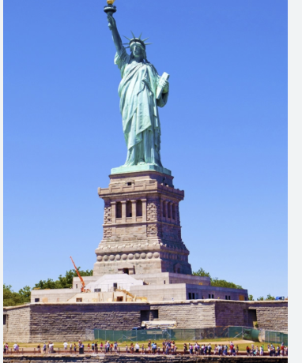
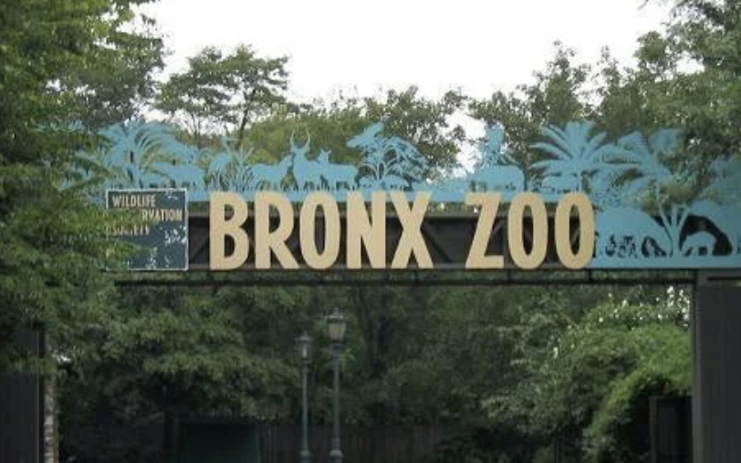
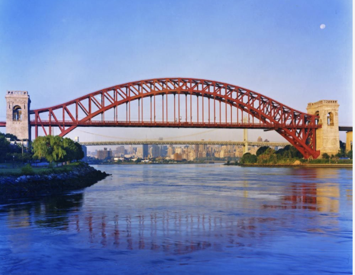

Famous Landmarks
New York City is home to many famous landmarks and attractions.

Statue of Liberty
The Statue of Liberty is one of the most famous landmarks in the United States. It is an iconic symbol of NYC that attracts many tourists to come into the city to visit the statue.

Bronx Zoo
The Bronx Zoo is one of the largest metropolitan zoos in the world. It is home to thousands of animals and is a popular destination for families and tourists.

Hell Gate Bridge
The Hell Gate Bridge connects Queens and the Bronx. It is a historic railroad bridge known for its large steel arch and impressive engineering.